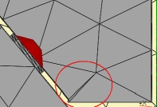
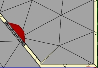

| Identifier | MinAngle= | |
| Format | Deg | |
| Purpose | Filtering mesh-file triangles below a certain angle | |
| Used in | MeshFile_Properties | |
| See also | MinArea= | |
MinAngle= excludes all triangles of the mesh-file, which smallest angle is smaller than MinAngle=.
 |
 |
| MinAngle=0 | MinAngle=5 |
Meshfile_Properties
Meshfilealias=M
MinAngle=5